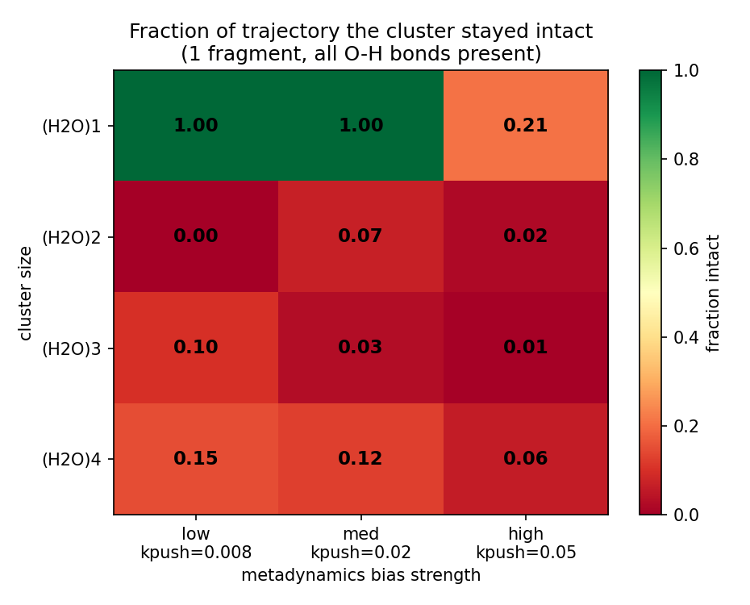
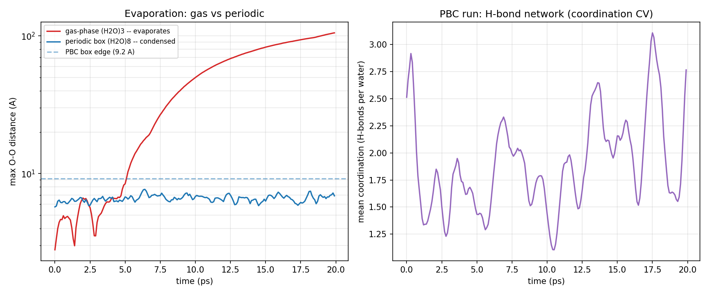
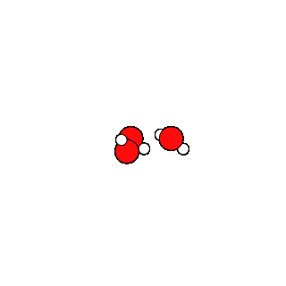
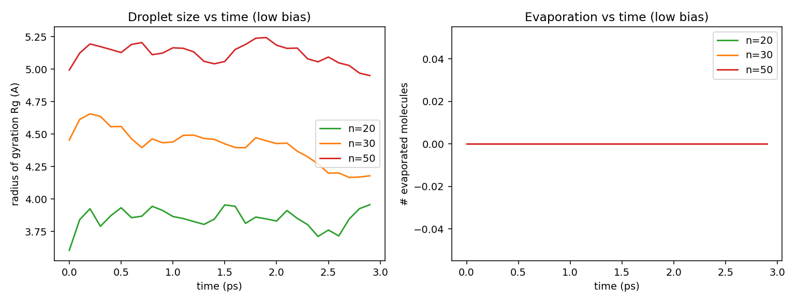
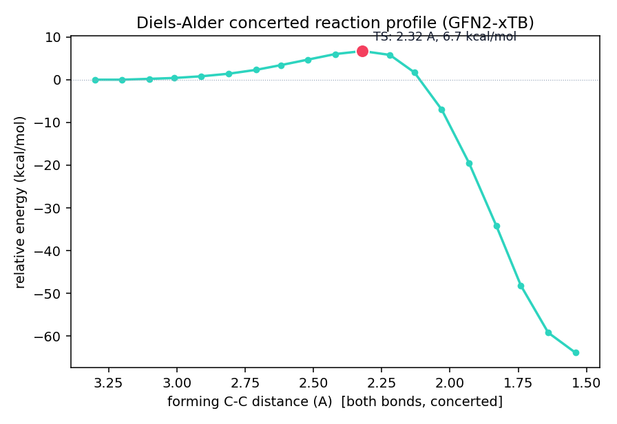
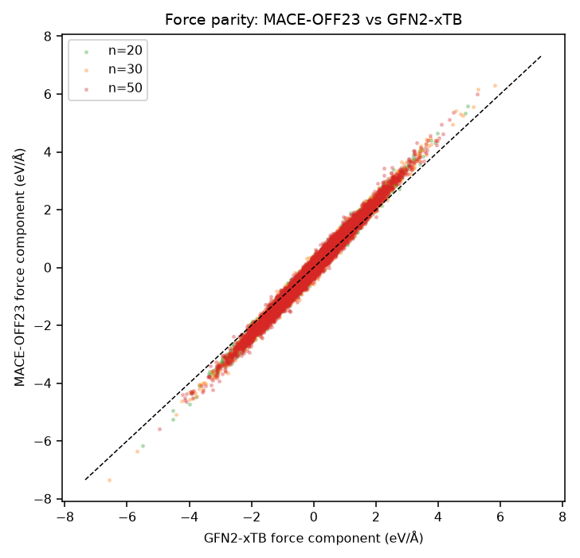
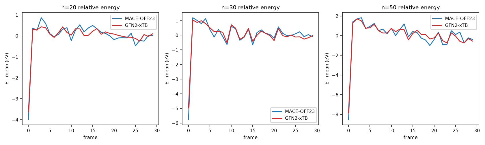

Validating GFN2-xTB RMSD-metadynamics workflows for water — bias & size sweeps, periodic and free droplets, and a Diels–Alder reaction — then benchmarking a MACE-OFF23 machine-learned potential as the path to accelerated sampling.
Results at a glance
Five studies, one thread: understand what the RMSD bias actually does, and whether a machine-learned potential can carry the workflow to larger systems.
The RMSD bias breaks whatever is weakest — a hydrogen bond for clusters, a covalent O–H only for a lone molecule. Small clusters evaporate rather than rearrange.
PBC removes gas-phase evaporation by confinement (max O–O ≤ 7.7 Å vs >100 Å in gas), at the cost of GFN1 — GFN2 is unsupported under PBC.
Free vacuum droplets of 20–50 waters stay intact at low bias — the opposite of the tiny n=2–4 clusters — and keep GFN2, no box needed.
Butadiene + ethylene → cyclohexene, driven with the same bias. Verified concerted TS: forming bonds 2.32 Å, one imaginary mode −394 cm⁻¹.
Force components correlate at r ≈ 0.99 and relative energies to ~2–3 meV/atom — the MLIP tracks the xTB surface closely.
MACE (≈ linear) catches O(N³) xTB at 150 atoms and wins beyond — the surrogate's payoff is exactly the large-droplet regime.
gas-phase (H₂O)1–4 · GFN2 · 20 ps
Sweeping bias strength kpush against cluster size shows the RMSD bias preferentially rips whatever bond is weakest. A lone water resists and only dissociates at high bias — it has to break a covalent O–H (~5 eV). Hydrogen-bonded clusters come apart even at the lowest bias, because the intermolecular H-bond (~0.2 eV) snaps first. The tetramer is the most robust, held by more H-bonds.

(H₂O)8 PBC · GFN1 · trimer T-sweep
An 8-water periodic box stays condensed for the whole run (max O–O oscillates 6–7 Å, never leaves the cell) while the gas-phase cluster separates past 100 Å — periodicity removes the evaporation channel, though it forces GFN1 (GFN2 has no PBC multipoles here).
A complementary CV pair resolves the key ambiguity: checking the intramolecular O–H shows the clusters are intact molecules drifting apart, not dissociating — only the lone water truly breaks a bond. Raising temperature just makes intact molecules escape faster (max O–O 81 → 143 Å over 200 → 350 K).


(H₂O)20/30/50 · GFN2 vacuum · 3 ps
Scaling the free clusters up, every size holds together as a single droplet at low bias: stable radius of gyration, zero molecules evaporated, all O–H intact — the opposite of the tiny clusters, and with GFN2 retained (no box needed).
Raising kpush from 0.008 → 0.05 at n = 30 barely perturbs the droplet. That is not intrinsic robustness: the bias is a function of global RMSD spread over all degrees of freedom, so the same nominal kpush is far gentler on a 90-atom droplet than on a dimer. It argues directly for a size-normalized bias.
| n | Rg start → end | fraction in droplet | evaporated | O–H |
|---|---|---|---|---|
| 20 | 3.61 → 3.96 Å | 1.00 | 0 | intact |
| 30 | 4.45 → 4.18 Å | 1.00 | 0 | intact |
| 50 | 4.99 → 4.95 Å | 1.00 | 0 | intact |

butadiene + ethylene → cyclohexene · GFN2
Using the same RMSD machinery pulled toward a product (xtb --path), the reaction runs: both new C–C σ-bonds form. But the path's reported "barrier" (101 kcal/mol) is a biased-path artifact — the driver had to escalate the bias to connect. A relaxed concerted scan plus a Sella saddle optimization gives the real answer: a verified transition state with forming bonds at 2.32 Å, a single imaginary mode at −394 cm⁻¹, and a barrier of 6.7 kcal/mol (scan and optimizer agree).

MACE-OFF23 (small) vs GFN2-xTB · droplets
Comparing MACE-OFF23 against GFN2-xTB on the droplet trajectories: force components correlate at r ≈ 0.99 and relative energies agree to ~2–3 meV/atom. The surfaces have essentially the same shape (MACE is DFT-trained, so likely the more accurate of the two).
And the scaling is the real prize — MACE is ~linear while xTB is ~O(N³), so MACE's relative cost falls 2.5× → 1.6× → 1.0× across n = 20 → 30 → 50. By 150 atoms they are equal; beyond that the MLIP wins. The payoff regime is exactly the larger droplets we want to reach.
| n | atoms | force r | force RMSE | rel-E | MACE cost vs xTB |
|---|---|---|---|---|---|
| 20 | 60 | 0.992 | 0.185 eV/Å | 3.3 meV/atom | 2.5× |
| 30 | 90 | 0.992 | 0.190 eV/Å | 2.5 meV/atom | 1.6× |
| 50 | 150 | 0.991 | 0.198 eV/Å | 2.3 meV/atom | 1.0× |


Where this goes
The surrogate is validated on the existing runs; the next questions are how to sample with it and what to sample along.
Drive MD / metadynamics with MACE-OFF23 via ASE/PLUMED — not xTB's global-RMSD bias — and push the size ladder past n = 50 to map the crossover.
Coordination numbers (O–O, per-O O–H for proton transfer), local tetrahedral order, or a learned CV (TICA / VAMPnets / autoencoder). The crux of enhanced sampling.
Test a per-molecule / per-atom kpush, framed around how the effective bias scales with system size.